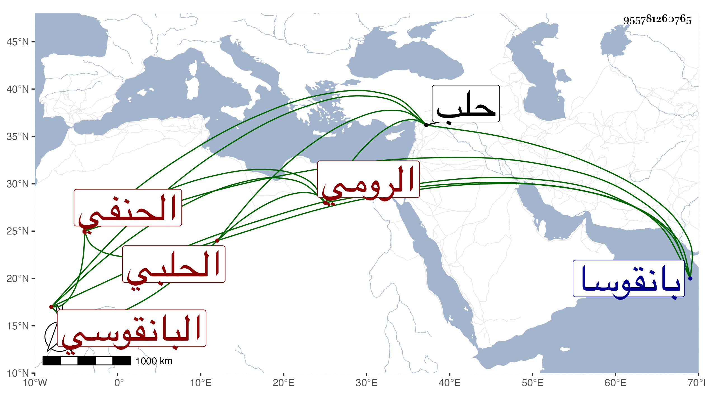

0902Sakhawi.DawLamic.ITO20230111-ara1.EIS1600.955781260765
Biography ID: 955781260765
822
علي بن عبد العزيز بن يوسف العلاء الرومي الحلبي نزيل بانقوسا منها ولذا يقال له البانقوسي الحنفي ويعرف باليتيم بالتصغير والتثقيل وبابن فاقرة بفاء ثم قاف مكسورة كعامرة . ولد في ربيع الأول سنة ثمان وخمسين وسبعمائة وسمع على ابن صديق وغيره بل قرأ على الشمس البسقاقي نسبة لمعتق أمه في الفقه وغيره ولازمه وبه انتفع وكذا أكثر عن البرهان الحلبي وكتب بخطه الصحيحين وولي الإمامة والخطابة بجامع العلاء الإستادار ببانقوسا ظاهر حلب ، وكان خيرا مديما للتلاوة والعبادة والقيام بربع القرآن كل ليلة غالبا والصوم منعزلا عن الناس متعففا عن وظائف الفقهاء سيما الخير عليه ظاهرة مات قبل سنة خمسين رحمه الله وإيانا .
